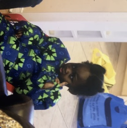

Welcome! I’m Hamidah (pronounced Huh-mee-dah). I’m usually based in Montreal, QC, at McGill. I used to be an AI Data Economics Fellow at Vana.

Previously, I was a research affiliate at the Topos Institute. Here's my research agenda (TLDR: libraries could be so much greater, and failures attributed to "not finding" what you need could become obsolete).
Here's a link to ongoing work started this fall on capturing and learning from developer traces at Mila supported by the Cosmos Institute.
I’m a fellow at IFP, a DC think tank, where I focus on high-skilled immigration and metascience. I sometimes write for Reboot.
Recently, I presented our work at Open Data Labs at the Participatory Data Governance workshop at CHI 2026.
I was a tiny contributor to the Silver Linings project, released last winter.
Nice. What about before?
This past summer, I worked at Amazon in Vancouver. I helped with NaijaCoder, worked on the Data Provenance Initiative, and hung out at B21. Previously, I was also on the UK Day One Project team.
Interesting...
Feel free to reach out!